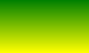
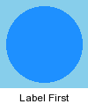
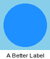
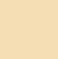
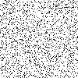
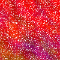

- Index
 ImageMagick Examples Preface and Index
ImageMagick Examples Preface and Index
 Simple Modifications of Animations
Simple Modifications of Animations
- Animation Alpha Composition
- All that Glitters...
- Resizing Animations
- Merging Multiple Animations
This page contains practical examples of working with GIF animations. It is
highly recommended that you read and understand the
Basics of Animations and at least the overall handling of
Optimizing GIF Animations, before trying to
understand these examples.
Simple Modifications of Animations
First an Important point
DO NOT save the intermediate, animations which you are not finished
processing, directly to GIF, especially images that you have yet to perform
any sort of
Semi-Transparency
Handling or
Color Optimization.
If you made the big mistake of saving to GIF you would have just made the
resulting animation worse, as IM would have now performed an automatic
Color Quantization, to reduce the number of
colors present to fit the images into the limited GIF format. Not only that
but it did each frame completely separately to every other frame, producing
different color selections and dither patterns. That is turn makes any further
processing, particularly any
Frame
Optimization just that much harder.
This is especially important for resized GIF animations, or ones you have
added a multi-color overlay or underlay, as this can add a lot of extra
colors.
You can use the IM internal format MIFF, as a temporary file format if you
want to work on an animation in steps or use individual PNG format images for
each of the frames being edited. Just do not do the final save to GIF unless
you are now sure you will not have color problems.
I repeat...
Do not use GIF as an intermediate file format, use MIFF, or PNG images.
Annotating
- add a copyright notice over ALL frames
As of IM version 6.2.6, you can "
-annotate" an animation, in similar way to that detailed in
Annotating on top of Images,
simply by doing so.
For example here we annotate the
previous
dispose animation created in
Animation
Basics.
convert canvas_prev.gif -gravity center \
-fill black -annotate +1+1 "Copyright" \
-fill white -annotate +0+0 "Copyright" \
annotate.gif
gif_anim_montage annotate.gif annotate_frames.gif
| |
![[IM Output]](annotate.gif)
|
The reason this works, is that "
-annotate" will position text relative to the virtual canvas of an
image, and not relative to the actual image data. As such the position of the
text on each frame is correct for an animated image.
Before version 6.2.6 however "
-annotate", like many other image operators, positioned
information, and overlays, relative to the actual image, and ignored any page
or virtual canvas offset a sub-frame may have.
One word of warning, drawing on an animation like this, without first
Coalescing the animation, can cause some
unusual effects, due to an animations existing optimization scheme (see next
set of examples). As such (and as you will see) removing any existing frame
and transparency optimizations by
Coalescing it first is recommended.
Drawing
- modify a coalesced animation
Now while "
-annotate"
places text relative to the virtual canvas of each frame, many other images
operations do not. This includes all "
-draw" operations, which only draw things relative to the actual
image, and completely ignore any offset it may have on a larger canvas.
For example, here we draw a fancy green circle near the top left corner of the
previous dispose animation.
convert canvas_prev.gif -fill LimeGreen -stroke SeaGreen \
-draw 'circle 35,35 20,30' draw_circle_fail.gif
gif_anim_montage draw_circle_fail.gif draw_circle_fail_frames.gif
| |
![[IM Output]](draw_circle_fail.gif)
|
Well as you can see "
-draw" drew the circle relative to the 'actual image', rather than
the larger virtual (page) canvas the image is part of. The result is, as is
typical in this sort of situation... a mess.
The simple solution to this is to first
Coalesce the animation, before drawing, then re-optimise the GIF
animation afterwards. See
Optimizing Animations
for details.
convert canvas_prev.gif -coalesce \
-fill LimeGreen -stroke SeaGreen -draw 'circle 35,35 20,30' \
-layers Optimize draw_circle.gif
gif_anim_montage draw_circle.gif draw_circle_frames.gif
| |
|
Note how the IM animation optimizer actually decided to just not overwrite the
part that was drawn on. This is actually more optimal than if it had drawn on
the actual sub-frame images themselves.
This method will let you overlay any sort of annotation, copyright notice, or
watermark you like. Of course you may need to use the special
Layers Composition technique to actually overlay
an image onto every frame in an animation.
If you get really good you can even do so far as doing
Animation Merging to overlay an animated copyright notice on your
animation.
  |
While this 'coalesce-optimize' technique will work with most operations
involving animations, especially with IM's optimizer, there are some
operations that do such drastic changes to images, such as major color
changes, and shadings, and with semi-transparency, that the resulting
animation failing to optimize very well.
For example just about any "-resize" operation is likely to produce an animation that will
optimize very badly afterward due major color changes. See Resizing Animations below for solutions to this.
|
Frame by Frame
- modifying one frame at a time
By using the IM
Image List or Sequence
Operators you can modify each frame of the animation separately. The trick
is to extract each frame in parenthesis, modify it, then replace the original
image with the modified version.
For example here we add text as a copyright watermark into the animation, as
an animation itself, making it even harder to remove. So as not to completely
destroy the animation, I also used semi-transparent colors.
convert canvas_prev.gif -coalesce -gravity center \
-font Ravie -pointsize 24 -fill '#FFF8' -stroke '#0008' \
\( -clone 0 -annotate 0 'This' \) -swap 0 +delete \
\( -clone 1 -annotate 0 'This' \) -swap 1 +delete \
\( -clone 2 -annotate 0 'image' \) -swap 2 +delete \
\( -clone 3 -annotate 0 'is' \) -swap 3 +delete \
\( -clone 4 -annotate 0 'Copy\nright' \) -swap 4 +delete \
-layers OptimizeFrame frame_mod.gif
gif_anim_montage frame_mod.gif frame_mod_frames.gif
| |
![[IM Output]](frame_mod.gif)
|
Note the use of
Parenthesis, to limit
the effect of the "
-annotate" operation to just a simple 'clone' of one frame of the
animation. The modified image is then returned to its proper position in the
image sequence using the
Swap and
Delete operators.
 |
The single number usage in the "-swap" operator was added in IM v6.3.4-3. before this you would
need to specify "-swap 3" as "-swap -1,3", for it
to work properly.
|
This technique of modifying individual frames will probably be one of the most
important techniques in manipulating image animations you will encounter.
You will also notice that I actually added the same text to both the first and
second image. The first image in the above animation is a
Zero Delay Intermediate Frame, which is used
to define the background for the rest of this animation. That is it flashes
by so fast, it is not usually visible to the users, nor is it meant to be
visible.
Thus the first two actual frames in the above animation should be regarded as
a single visible frame, rather than two separate frames.. The frame with a
non-zero time delay is the last frame of a 'display' frame sequence.
Similarly for other fast running animations, you may need to modify a number
of frames to make your change visible for any appreciable length of time. This
is not a problem for a static annotation that was drawn over all the
frames (see previous
Annotating example above).
This brings us to an important point about GIF animations.
Study an animation before attempting to modifying it.
It can make a BIG difference to the final result.
Cropping
- limit the area of animation
IM has endeavored to make the "
-crop" image operation work correctly relative to an images
virtual canvas rather than to the actual image (IM version 6.1.1 onward).
This in turn allows you to do things previously not directly possible.
For example crop the images of a GIF animation and still have it work as
expected for all animations.
convert canvas_prev.gif -crop 50x50+3+30 cropped.gif
gif_anim_montage cropped.gif cropped_frames.gif
|
|
![[IM Output]](cropped.gif)
|
As you can see the crop worked, just like it would for a
cropping a single image, preserving the appropriate offset and page size,
so the image data is still positioned correctly, even though the area involved
has been reduced.
As you can see this did not change the overall virtual canvas size!
 |
Do not use "+repage" to remove the crop offsets from a frame optimized GIF
animation. Doing do will also remove the needed frame offsets that the
position the sub-frames on the virtual canvas, and which later frames
may rely on to animate correctly.
|
The above "
-crop"
operation did however produce a warning message...
As the crop of one of the frames in the animation missed the sub-frame overlay
image used for that frame. that is one frame did not update the area that was
cropped from teh animation. As a result that frame now does not contain any
real image!
To compensate, IM not only produces a warning message, but generates a special
'
Missed Image' as a placeholder in the
animation to keep everything in order, and preserve any 'delay' or 'disposal'
methods attached to that frame. You can leave that placeholder, or fix it as
you like.
In this case the '
Missed Image' is needed
for the animation to run as expected. However if multiple consecutive missed
images are generated, you can probably merge them together into a single
missed image using the "
-layers" method '
RemoveDups'.
Caution and study of the animation is however still recommended. (See
Splitting up an Animation below, for a more detailed
example of this.
Crop the Canvas Too
- viewport crop of the animation
Just as a normal crop, preserved the virtual canvas of the original images, so
did a crop of an animation. This is probably not the intent in this case.
Because of this, in IM version 6.2.4-5, a special flag '
!' was
added to the "
-crop"
argument. This flag will cause crop to not only crop the individual image
frames, but also adjust the page or canvas information about the image to that
same area.
This is known as a 'viewport crop', as the result will be as if you are
looking at the image though a 'window' or 'viewport' of the size and position
of the crop argument.
Not only is the size of the virtual canvas set to the size of the crop area,
but the offset of each frame in the animation is adjusted to keep things
correct. (See
Viewport Crop with
Canvas/Page Adjustments).
For example lets repeat the previous crop, but also crop the canvas
information using the '
!' flag...
convert canvas_prev.gif -quiet -crop 50x50+3+30\! crop_viewport.gif
gif_anim_montage crop_viewport.gif crop_viewport_frames.gif
|
|
![[IM Output]](crop_viewport.gif)
|
|
The '!' character has special significance to some UNIX
shells, like "csh", and must be escaped with a backslash,
even when placed inside quotes. IM will ignore backslashes, in geometry
arguments so it does not hurt to always backslash it.
|
As you can see the result is more like what you probably really wanted to
achieve when cropping an animated image.
Note that I included a "
-quiet" setting to ask IM not to give the warning message about
the
Missed Image, that we generated in the
previous crop attempt. This is recommended whenever cropping animations, as
the warning does not really apply.
Note that a
Viewport Crop will also
allow you to increase the canvas area or even re-position everything within
the canvas. However it is dangerous as any images which fall partially or
completely outside the crop area will be cut down to only show the part of the
image that appears within that area.
Just one final word of warning. When using a 'viewport crop' the frame images
are moved in the negative direction to the offset given for the 'viewport'.
This can appear illogical, unless you remember that the offset in the crop
operator is the position of the viewport, and not a direct re-position of the
images themselves.
Bounds Trimming
- automatic canvas size correction
As with the previous operations trimming an animation can be tricky. If the
animation consists of a simple
Cleared
Frame Animation, then you can trim an animation simply by working out the
maximum bounds of all the individual frames within the animation.
As of IM v6.3.4-8 you can do this very easily using a
'
TrimBounds' layer method.
convert anim_bgnd.gif -layers TrimBounds anim_trim_bounds.gif
|
![[IM Output]](../anim_basics/anim_bgnd.gif)

![[IM Output]](anim_trim_bounds.gif)
For users before this version of IM you can still do the same thing, but only
in a two step process (which also performs other unwanted processing).
To do this you would use a
Layers Merge to
merge all the frames of an animation down to a single layer, and then have IM
report the size and offset of that layer...
convert anim_bgnd.gif -layers merge -format '%wx%h%X%Y' info:
|
Now that you know the bounds of all the frames, you can just
Viewport Crop the whole animation to this size.
convert anim_bgnd.gif -crop 89x77+5+10! anim_trim_crop.gif
|
![[IM Output]](anim_trim_crop.gif)
If you also want to trim a static background from an animation then
your best bet is to delete the first frame from a
Frame Optimized animation, before using the
Layers Merge step. You can then use the
returned bounds for the
Viewport Crop on the
original animation.
Repositioning Frames
A similar and related operation is the 'relative repage' operator. This will
add the given offset to all the individual sub-frame layers of the animation,
allowing you to adjust their positions relative to the whole canvas. To make
a "
-repage" operation
relative, you also add a '
!' flag to its argument.
For example here we displace the second an later frames of an animation 30
pixels down and right, returning the first 'background' frame in its normal
'
+0+0 position.
convert canvas_prev.gif -repage 0x0+30+30\! \
\( -clone 0 -repage +0+0 \) -swap 0,-1 +delete \
repage_offset.gif
identify repage_offset.gif
| |
![[IM Output]](repage_offset.gif)
|
|
|
|
The above animation will fail (show only the first two frames) for Windows
Internet Explorer version 8. This happens any time a frame attempts to draw
an image beyond the bounds of the animation canvas.
|
Notice that none of the images have been 'cropped' or cut down. Only their
positions have been changed, relative to the original background image, even
if the image was moved 'off canvas'.
If you like, you may also like to expand the canvas to match these new bounds,
either by adjusting the canvas size directly...
convert repage_offset.gif -repage 130x130 repage_canvas.gif
| |
![[IM Output]](repage_canvas.gif)
|
By using the Bounds Trim Layers Method you can
automatically expand the animations bounds just enough to include the images
which were now being placed 'out-of-bounds'...
convert repage_offset.gif -layers TrimBounds repage_bounds.gif
| |
|
|
Using "-repage" to
move images left or up, especially with a small canvas, is likely to fail
for GIF animations. This format basically cannot use a negative image
offset.
For that you may be better off also applying a 'viewport crop', or using
the 'trim bounds' to shift all the offsets into a larger positive canvas.
Either method will guarantee a positive offset to all the image frames.
The PNG and MNG formats can handle negative offsets, but many web browsers
and other programs may not understand such offsets, producing weird
effects. One version of the "Firefox" web browser for example
produces extremely large images, when attempting to display a PNG with
a negative offset.
|
Reversing Animations
- making animations run backward, or cycle
As of IM v6.3.3, the "
-reverse" image sequence operator was added (see
Reverse Operator for more details). This
allows you very simply reverse the order of a coalesced animation sequence.
For example here I make a 'hand draw k' animation become undrawn!
convert script_k.gif -coalesce -reverse \
-quiet -layers OptimizePlus -loop 0 reversed.gif
| |
![[IM Output]](reversed.gif)
|
I had to re-add the "
-loop"
option to the above as this needs to be attached to the first image, which is
now the last image! The result could also use some timing adjustments, but as
you can see it now 'undraws' the letter!
Be sure to "
-coalesce"
the image sequence before reversing it, as any
Frame Optimizations present are dependant
on the image order. Better to remove those optimizations first.
Patrol Cycles
- cycle back and forth between two ends
A similar technique is to add a reversed order of frames to the end of the
animation, so the resulting animation cycles between the first and last frames
of the original animation. It's a bit like a guard walking a patrol between
two points, and is called a 'Patrol Cycle'.
Here I use the image
Duplicate Operator
(added to IM v6.6.8-7) to generate the extra frames (reversed).
convert script_k.gif -coalesce -duplicate 1,-2-1 \
-quiet -layers OptimizePlus -loop 0 patrol_cycle.gif
| |
![[IM Output]](patrol_cycle.gif)
|
Notice that I didn't just copy all the images of the animation, but skipped
copying the very first and last image of the original sequence. If I had
copied all the images, the first and last images would appear for twice the
expected period of time, and make the animation file larger than is needed.
Even so, you should again watch out for
Zero
Delay Intermediate Frames at the start and end of the animation, as these
can result in unexpected problems. Basically do not do this without studying
the animation first, or you are asking for trouble.
Also to allow better optimization of the result, you may even need to add some
extra
Zero Delay Intermediate Frames,
between the forward and reverse cycles, to improve optimization. These extra
frames were probably not provided in the original animation optimization as
the whole animation normally resets when it loops. See
Splitting Frame Updates for more details of
how these extra frames help optimize and improve the animation.
Here is an older method using the
Clone
Operator to generate duplicate frames.
convert script_k.gif -coalesce \( -clone -2-1 \) \
-quiet -layers OptimizePlus -loop 0 patrol_cycle_2.gif
| |
|
Color Morphing
- animated change between two images
The "
-morph" operator
is an especially interesting operator. It will take a list of images, and
insert extra frames between them, so as to do a soft color change from one
image to the next.
This operator is not however a true 'morph' as it only modifies the pixels
color creating a sequence of
Blended Images.
A true movie like 'morph' also involves image
Distortion to transform the outline of the object in the image to the
objects in the other image.
For example here I create a
Patrol Cycle using a color
morph to generate the extra frames between the rose image and its flipped form.
convert -delay 20 rose: \( +clone -flip \) -morph 5 \
-duplicate 1,-2-1 rose_flip.gif
| |
![[IM Output]](rose_flip.gif)
|
This is not particularly good as all the images have the same delay. The
result is that the animation never seems to 'rest' or pause between the two
end points of the cycle.
A better solution would be to have a pause on the original and its 'flipped'
form. That however requires you adjust the delays of the original images
to be different to the morphing images.
convert rose: \( +clone -flip \) -morph 5 -set delay 10 \
\( -clone 0 -set delay 240 \) -swap 0 +delete \
\( +clone -set delay 240 \) +swap +delete \
-duplicate 1,-2-1 rose_flip_pause.gif
| |
![[IM Output]](rose_flip_pause.gif)
|
As you can see the timing delays can become very important for generating
a good animations, allowing the animation to 'rest' at just the right points.
As of IM v6.6.9 you can set the delay using a
FX Percent Escapes calculating based on
the index of the image. Here the FX expression says use a delay of 10 if the
image ingex is not the first (t=0) or the last (t=n-1), otherwise use larger
value.
convert rose: \( +clone -flip \) -morph 5 \
-set delay '%[fx:(t>0&&t<n-1)?10:240]' \
-duplicate 1,-2-1 rose_flip_anim.gif
| |
![[IM Output]](rose_flip_anim.gif)
|
For a whole range of different methods of 'morphing' or doing a 'transition'
from one image to another see Fred Weinhaus's "
transitions" and "
fxtransitions" ImageMagick shell scripts. The Example page
includes the basic algorithm that the script uses to generate the animation.
Resize Morphing
- animated change in size
The
Color Morph Operator actually will not only do color
blending between two images, but also does image resizing at the same time.
For example here I use "
-morph" on two images that are different sizes, and even different
aspect ratios.
convert rose: medical.gif -morph 10 \
-layers TrimBounds -set dispose previous -coalesce \
-background black -alpha remove \
-set delay '%[fx:(t>0&&t<n-1)?10:60]' \
-duplicate 1,-2-1 -loop 0 morph_resize.gif
| |
|
Only the first line does the resize morph. If you were to look at the actual
images each frame will have a different size! The next two lines 'fills out'
the images to be the same size, and filling the unused parts with black.
Specifically the operations is designed so the order of the image does not
matter. The rest is to just setup a
Patrol Cycle and
associated timing delays.
The 'resize' is only performed from the top-left corner. At the time of
writing the
Color Morph Operator does not understand
layer offsets, or any other spatial morphing (distorted morphing). As such if
you want the resize to be centered, you may need to use much more complex
techniques shown in later sections.
Here is a similar example, this time resizing the image with a smaller version
of the same image (aspect ratio preserved)...
convert rose: \( +clone -resize 10 \) -morph 10 \
-layers TrimBounds -set dispose previous -coalesce \
-background black -alpha remove \
-set delay '%[fx:(t>0&&t<n-1)?10:60]' \
-duplicate 1,-2-1 -loop 0 morph_resize_self.gif
| |
|
Note that the 'between' images are more blurry than they probably should be.
This is because the larger image is not only being resized smaller, but it is
also being color blended with the smaller image which was resized larger.
Wipe
- creating a wipe from one image to another
This is actually very easy to do. Just overlay 'slivers' of the new image.
These are directly generated using a simple
Tile
Crop.
For example here we 'wipe' from one image to its flipped version, and just for
fun, wipe back again.
convert rose: \( -clone 0 -flip -crop 3x0 \) \
\( -clone 0 -crop 3x0 \) \
-set delay 10 -loop 0 wipe.gif
| |
![[IM Output]](wipe.gif)
|
Here is a version from GeeMack on the IM Forums, that implements wipes from
all four directions...
convert -size 100x60 -delay 100 \
gradient:green-yellow gradient:blue-purple \
gradient:orange-white gradient:red-black \
-write mpr:stack -delete 0--1 \
\
mpr:stack'[0]' \( mpr:stack'[1]' -set delay 5 -crop 4x0 \) \
mpr:stack'[1]' \( mpr:stack'[2]' -set delay 5 -crop 0x4 \) \
mpr:stack'[2]' \( mpr:stack'[3]' -set delay 5 -crop 4x0 -reverse \) \
mpr:stack'[3]' \( mpr:stack'[0]' -set delay 5 -crop 0x4 -reverse \) \
-loop 0 wipe_all.gif
| |

|
Animated Distorts
- distorting multiple image based on image index
Many operators can use
Percent Escapes
in their arguments. This means you can actually modify the operator so that
it performs slightly differently for each image that is being processed.
The method involves first
Duplicating
Images to create 30 (or however many you like) identical copies of the
rose image. You then modify each image differently using
FX Percent Escapes to calculate distortion
values, based of the images index '
%[fx:t]' and the number of
images in the list '
%[fx:n]'.
For example here I translate the image by a calculated amount.
convert rose: -duplicate 29 -virtual-pixel tile \
-distort SRT '0,0 1, 0, %[fx:w*t/n],%[fx:h*t/n]' \
-set delay 10 -loop 0 rose_diagonal_roll.gif
| |
|
And here I rotate the image, depending on the index, but generate a longer pause
if the image index is 0 (the first image).
convert rose: -duplicate 29 -virtual-pixel Gray \
-distort SRT '%[fx:360*t/n]' \
-set delay '%[fx:t==0?240:10]' -loop 0 rose_rotate.gif
| |
![[IM Output]](rose_rotate.gif)
|
Note that the image index ('
t') has a value from '
0'
to '
n-1', as such the formula '
%[fx:t/n]' will have
a value from '
0.0' to a value just short of '
1.0'.
This is perfect for a repeating or cyclic animation such as above, but may not
be very good for generating transitions from one image to a new image. In
that case you want the final frame to have a multiplier of '
1.0'
for the final frame, use the formula '
%[fx:t/(n-1)]'.
This is only a sample of what can now be done easily using image indexes in
'
%[fx:...]' calculations. Imagine what is possible with a more
complex distortions.
Without the use of image index calculations, the above would have required
an external shell loop, to generate each frame individually, and a separate
step to collect the frames to form the final animation. Examples of such
looped shell scripts are given in
Simple
Warped Image Animations as these operators do not allow the use of
Percent Escapes in their arguments.
|
Before IM v6.6.9-0 Percent Escapes and
FX Percent Escapes involving image
indexes, such as '%p', '%n',
'%[fx:t]' and '%[fx:n]' were broken. Typically
they would only return unhelpful values of either '0' or
'1', and not the actual index and number of images in the
current image sequence.
|
Append a Label
- add a label to whole animation
As always there are a number of ways to actually append a label to an image.
For example, for animations that has an initial background canvas, or one that
only overlays new color to previous frames, then you can just append the label
to the first frame of the image. The other frames will not remove it.
Here we just add some extra space with "-splice", and "-annotate" some text in it.
convert canvas_prev.gif \
\( -clone 0 -coalesce -gravity South -background white \
-splice 0x18 -annotate 0 'Label First' \) \
-swap -1,0 +delete label_first.gif
| |

|
However this only works for some animations, It would not work for a common
Cleared Frame Animation which clears or
replaces all the pixels after each frame has been displayed.
For a more general method that works for all animations, we need to first
"
-coalesce" the
animation to the un-optimized
Coalesced Animation.
Then we can add the label to each and every coalesced frame of the animation,
before re-optimizing it.
convert canvas_prev.gif -coalesce \
-gravity South -background white -splice 0x18 \
-annotate 0 'A Better Label' \
-layers Optimize labeled_anim.gif
| |

|
Rather than using "
-annotate" to draw text into the added extra space, you can use a
composition method (see next sections) to compose an image into the added
space. That way you can prepare a much fancier label to add to the animation.
Of course doing this can cause some animations not to optimize very well
afterward, especially
Cleared Frame
Animations, but that is the price you pay for adding labels. One solution
for that type of animation is to prepend a 'initial background canvas' that
contains the label, as shon in the section explainging
Cleared Frame Animations.
Also note that adding a label to an animation can result in many extra colors
being added. This could overflow the GIF color limits, as such you may have to
be prepared to color optimize your animation as well. A very difficult task
that is best to avoid if possible (see
Color
Optimization). This can be a problem for any general modification to any
animation.
Remove Transparency
- add a solid color background
A large number of animations you find on the web have a transparent
background. These are very useful as you can place them on web pages without
needing to worry about any background pattern that may be present.
However when processing animations, especially when applying other image
operators such as "
-resize" and "
-blur", such an animation has problems. The general solution is
Remove Transparency from the image,
generally by somehow overlaying them onto a specific color, such as the
specific color that us used as the background to a web page.
![[IM Output]](../images/script_k.gif)
For example here I have a simple transparent overlay animation of a letter 'K'
being drawn as if by an invisible hand.
As this GIF animation is drawn with transparency, and only overlays images
onto the previous frames (adding pixels, never removing them), a simple way of
setting a background color (or image) is to add it to just the first frame of
the animation. All the other frames contain a transparent color for the
background, so will not effect the result.
Here we use the
Flatten Operator to overlay
the first frame of the animation onto a '
LimeGreen' background
color. We can use "
-flatten" for this as we are only applying it to a single image,
and NOT the whole animation.
convert script_k.gif \( -clone 0 -background LimeGreen -flatten \) \
-swap 0,-1 +delete script_k_flatten_0.gif
| |
![[IM Output]](script_k_flatten_0.gif)
|
It is also important to not that the original first frame was only a single
pixel in size. The
Flatten Operator not only
colored the background, but also expanded that frame to its full size. that
is it 'filled out' the frame as well.
Note however that as only the first frame of the animation has been colored.
This method is preferred, as any optimization (such as the heavy optimization
that this animation contains) is preserved.
Coloring the first frame will not work for all GIF animations. It only works
for simple
Overlay Animations.
For a general method of removing the transparency from an animation, you need
to first "
-coalesce"
the animation, and then actually
Remove
Transparency from all the frames, using the
Alpha Remove Operator. This time lets
do this using a '
Tomato' background color.
convert script_k.gif -coalesce -background Tomato -alpha remove \
-layers Optimize script_k_alpha_rm.gif
| |
|
Of course the resulting optimization may not be the as optimal as the
original, but the animation no longer has any transparency in it. As an
additional side-effect, any '
Background' dispose settings in the animation will have been
converted to either '
None' or
'
Previous', by the
Frame Optimization process, as transparency
is no longer an issue.
A more complex background handling such as underlaying a background image or
pattern, requires a much more complex handling of animations, than the simple
modifications we have looked at so far. This is what we will look at next.
Multi-Image Alpha Composition
The next level of animation handling requires you to be able to compose single
static images either over, or under an existing animation. That is general
Alpha Composition. This gets even trickier
when two separate sets of images are being merged.
Before IM v6.3.3-7 multi-list composition was only possible using specially
designed API scripts, or shell scripts that saved and merged individual frames
of the animation. Neither was very nice techniques, but that was all that was
possible. That is now changed.
Draw Images
- draw an image onto a list of images
The "
-draw" operator has the
ability to compose a
source image on top of a list of images. It is
also the only multi-image alpha composition method that you could use in
the "
mogrify" command, or
against multiple images, before IM v6.3.3-7.
The reason this Alpha Composition technique was so important was because it
allowed you to specify an image as a separate argument to the current image
list. That is within the quoted
Magick Vector
Graphic language of "
-draw".
Because of its historical importance, I will show its use in detail,
especially for users which still have older versions of IM.
For example here I overlay rose image over the whole animation.
convert canvas_prev.gif -coalesce \
-gravity NorthEast -draw 'image over 5,5 0,0 "rose:"' \
-layers Optimize draw_over.gif
| |
|
This allows you to
Compose an external
source image over every image in the current image sequence.
This is good enough for most purposes. For example by using the '
Dst_Over' composition method you could
also place an image 'under' the animation as a static background.
For example here we 'underlay' a "
netscape:" built-in image,
though it could have been any external image file...
convert script_k.gif -coalesce \
-draw 'image DstOver 0,0 0,0 "netscape:"' \
-layers Optimize script_k_netscape.gif
| |
![[IM Output]](script_k_netscape.gif)
|
Note that the size of the animation has not changed, as it is the
destination images define the final size of the alpha composition.
If you did want to create a larger canvas, you had to adjust the size and
offsets of the animation appropriately to accomidate the background. For
example using a
Relative Repage of the
animation before coalescing.
convert script_k.gif -repage 100x100+20+20\! -coalesce \
-draw 'image DstOver 0,0 0,0 "granite:"' \
-layers Optimize script_k_granite.gif
| |
![[IM Output]](script_k_granite.gif)
|
Also if you wanted to use an image that had already been read-in, created, or
modified, then you need to use a "
MPR: Memory
Program Register to provide you with a 'read source' for that image.
convert -size 53x54 xc:SkyBlue -fill DodgerBlue \
-draw 'circle 26,27 24,8' -write mpr:bgnd +delete \
\
script_k.gif -coalesce \
-draw 'image DstOver 0,0 0,0 "mpr:bgnd"' \
-layers Optimize script_k_mpr_bg.gif
| |
|
That is about the limit of Draw Alpha Composition methods. No overlaying the
animation images 'over' a
destination image of unknown size, and no way
to merge two separate multi-image sequences together.
That was until...
Layers Composition
- alpha composition for image lists
With IM v6.3.3-7 the "
-layers" method, '
Composite' was added
allowing you compose two completely separate sets of images together.
(For a short summary see
Layering Images,
Layer Composite)
To do this on the command line, a special '
null:' marker image is needed to define where the first
destination list of images ends and the overlaid
source image
list begins. But that is the only real complication of this method.
So lets try it out by creating a set of shadows from set of images, then
overlaying the original image over those shadow images...
convert script_k.gif -coalesce coalesced_k.gif
convert coalesced_k.gif -background black -shadow 100x3+2+5 \
-background SkyBlue -alpha remove shadows_k.gif
convert shadows_k.gif null: coalesced_k.gif \
-layers Composite compose_shadow.gif
gif_anim_montage compose_shadow.gif compose_shadow_frames.gif
| |
![[IM Output]](compose_shadow.gif)
|
The above example is very important, so I will explain it in detail.
First we generate a
Coalesced version
of our animation so as to remove any
Optimizations
that may be present to make the animation ready for some serious processing,
without any GIF optimizations interfering with the processing.
Next we created an animated shadow image from our coalesced animation, and
Remove Transparency, as GIF cannot handle
semi-transparent shadows. This is the animation that want to add 'under' our
original animation. It has the same number of frames, and even the same
timings as the original animation. This correspondence is important, so
don't forget it.
Now we read in the two animation or layer sequences, but we add a special
'
null:' image separator between
them, so that ImageMagick knows when one sequence ends and the next sequence
begins. This image separator is automatically removed by the next all
important "
-layer composite" operation. Other API's should be
able to use separate 'Wands' of images, rather than a single sequence with
a special separator.
The layers composition is then performed just as if these two animations or
image sequences were just a simple single image, rather than a sequence of
multiple images. Each pair of images, one destination, and one source, are
composited together, to generating a merged (composited) sequence on images.
The final result is that we have added shadows to our original animation
sequence, which is ready for GIF optimizations, or just direct use.
Now you can do all the above steps in a single command. However you can't
just use "
-clone" to
create a copy of the original sequence, since we don't really know (or want to
know) how many images are in the sequence. Instead you can use a "
MPR: Memory Program Register to save a whole list of
images. It's sort of like taking a snapshot of the whole image sequence
currently in memory, and then reading it in again later.
The result is a command like this, though I used a different colored
background.
convert script_k.gif -coalesce -write mpr:images \
-background black -shadow 100x3+2+5 \
-bordercolor Wheat -border 0 \
null: mpr:images -layers Composite \
composite_shadow.gif
| |

|
This version actually works better as we did not loose the offset information
that the
Shadow Operator generates (GIF's
cannot save a negative offset, so resets it to zero). We could fix that in
the above by using a MIFF file format for the intermediate images rather than
GIF, or, as you will see in the next example, by using a "
-geometry" composition
offset.
Basically these examples shows that the
Layers Composite
Operator actually understands the individual Virtual Canvas Offset
("
-page") settings and
will handle them, just like a
Layers Flatten
or better still
Layers Merge operators would
handle them.
But the
Layers Composite Operator also understands
the use of a Composite Geometry ("
-geometry") offset (zero by default), to control the overall
placement of the whole overlay image sequence. It even understands the
effects of "
-gravity"
on that global offset.
For example.. let's overlay our original 'K' animation 'South' of the generated
shadow animation...
convert shadows_k.gif null: coalesced_k.gif \
-geometry +0-10 -gravity South -layers Composite \
composite_south.gif
| |
|
The above also shows that just like normal two image
Alpha Composition, it is the destination image
sequence that controls the final output image size, and any composition overlay
will be clipped to the destination canvas image. As such you should ensure
all the destination images is large enough to contain your final results.
|
The resize capability of "-geometry" is not strictly part of the composite operation, it
only resizes the last image of the current image sequence. As such it will
not do what you expect if used with multi-image Layers Composition. See Resize
Geometry for details.
|
Basically Layers Composition is very much like normal composition.
Quite simple really.
Did I say simple?
Layers Composition details......
As you saw above the command line version of "
-layers Composite" uses the first
'
null:' image found in the current
image list as a marker to separate the two lists. The two image lists are
separated and the '
null:' junked before the two lists are
Alpha Composited together, two images at a
time.
Only an image generated from the special '
null:' image source can be used for the marker, and if not found
an error will be reported. You currently cannot read this '
null:' marker image from a pipeline (at
least not at this point), only generate it when needed.
Layer composition is also rather more complex than a simple, two image
Alpha Composition, as the images virtual
canvas of the image list also accounted for. Normally alpha composition
ignores any virtual canvas size and offset for positioning purposes, using
only the images actual size. This special layers method uses the virtual
canvas information, for geometry positioning, so as to align the two image
sequences.
To this end any virtual canvas offset a sub-frame has is also added to the
normal "
-gravity"
adjusted, "
-geometry"
composition offset, to work out the position of the image overlay.
Only the virtual "
-page"
canvas size of the first image of each list is used to work out the "
-gravity" adjustment to the
"
-geometry"
composition offset. The canvas size of later images is ignored, with only the
individual virtual "
-page"
offset being added to the calculated "
-geometry" offset.
In other words "
-layers
Composite" is designed for alpha composition of 'layers' or
'animations', and the special requirements of such image lists.
Caveats...
You do however still need to be careful with image lists you are overlaying.
If for example if the
destination list images are not large enough, or
positioned incorrectly to contain the overlaid
source image, the
overlaid image will be clipped, or miss the destination image completely. For
this reason it is a good idea to
Coalesce the
destination images to the full canvas size, before
overlaying smaller
source images. For example see
Side-by-Size Animation Append examples below where canvas size needed to
be expanded to provide space for the appended images.
Also if the
source image list is an GIF animation, then you may need to
be sure that the sub-frames are clean of things like:
Compression Optimizations, and fancy
Frame Optimizations; or you may have
problems. On the other hand a
Cleared
Frame Animation or
Coalesced
Animation can be directly '
Composite' without any problems.
Just remember that
Layers Composition does not
understand any existing
GIF Disposal
Methods that may be present in the images, though it preserves the
destination GIF animation meta-data, such as:
Dispose Method,
Frame Delay, and
Iteration Loop Limits.
The one exception to this is given in a special case below.
Single Image Composition
- compose images with a single image
Normally two lists of images of equal length are composed together, one image
pair at a time until either of the image lists runs out. Neither list of
images will be repeated. The composition will just stop. You are left with
just the original
destination image list with the added compositions.
The '
null:' separator image, and
all the
source images are deleted from the current image list.
|
An API interface to this layers method, should allow you produce two separate
image lists, and it will be left up to you to delete both input image lists
that was used to generate the resulting list of images. The 'null:' separator should not be needed.
|
However if one of the lists only contains a single image, that image will be
composed against all the images in the other list. It does not matter if that
single image is a
source image or a
destination image. The
method will do the composition against the other image list, and preserve the
GIF meta-data of the
image list, rather than the single image, even if
that image is the
destination image.
This 'compose against a single image' is a special case for
Layers Composition, and is very useful for adding a
background to an animation (see next), or inserting a static object into an
animation.
Static Background
- compose over a larger background
For example using this special
Single Image
Layer Composition method we can compose an animation over a
a static background...
convert -size 100x100 plasma:fractal null: \( script_k.gif -coalesce \) \
-gravity Center -layers Composite \
-layers Optimize composite_background.gif
| |
![[IM Output]](composite_background.gif)
|
As the background image is the
destination, it defines the final size
of the animation, but all the meta-data (delays, labels, comments, etc) will
come from the source image list. Normally that information comes from the
destination image list. This is only time the source image provides the
meta-data information during an image composition.
Also note that as
Layers Composition understands
"
-gravity", the image
is properly centered, without you needing to do the calculations yourself.
However if the source frames contained offsets, these will also be added to
the gravity defined position, so that the relative position of all the
sub-frames remains correct.
Note that as the animation "
script_k.gif" is actually a type of
Overlay Animation their are alturnative
methods of adding a static background to the animation. See the section above
on
Remove Transparency for
an example (onto a solid color, but can be any image).
The same is true for the even simpler
Cleared Frame Animation. In that case you don't even need to
Coalesce the animation first, but can
directly compose it onto a background image. However you may need to
"
-set" the
'
dispose' method being used afterward or better still
Optimize the
Fully Coalesced Animation.
However any other type of optimized animation, will require that "
-coalesce" operation, and full
composition with all the animation frames. As such it is probably better to
to use the above method, just to be sure all GIF animations are handled
correctly.
All that Glitters...
Glitter Animations
The above
Layers Composition methods makes it
a lot easier to generate simple animations, such as glitter.
First we need some glitter that is large enough to cover the image being
processed. Here I will generate a three image glitter animation from some
Random Specks Images.
First this is a raw black and white glitter on pure transparency, generating 3
frames of glitter by separating the three color channels into black and white
Channel Images. It is basically a raw
starting point for generating any other type of glitter. The
'
30%' threshold controls how many 'dots' there are per frame.
convert -size 100x100 xc: +noise Random -separate \
null: \( xc: +noise Random -separate -threshold 30% -negate \) \
-compose CopyOpacity -layers composite \
-set dispose background -set delay 20 -loop 0 glitter_overlay.gif
| |

|
From this 'raw' glitter you can overlay it using a '
Screen' alpha composition to only
brighten some color, to generate a glitter of a specific color. I use the
Border Flatten Method (above).
Just a plain color...
convert glitter_overlay.gif \
-compose Screen -bordercolor GoldenRod -border 0x0 glitter_gold.gif
| |
![[IM Output]](glitter_gold.gif)
|
Using the
Layer Composition, you can also use a
single image, or even multiple images to provide a variable colored
background. For example here I generate three
Fractal Plasma images, to provide a
slightly randomised coloring to the glitter pattern.
convert glitter_overlay.gif null: -size 100x100 \
plasma:red-firebrick plasma:red-firebrick plasma:red-firebrick \
-compose Screen -layers composite glitter_plasma.gif
| |

|
Of course there are lots of other glitter styles and movement patterns.
You can find and download many such glitter tiles from the WWW.
To apply a glitter like this to an image, there are a number of different
methods. Typically you mask the glitter to a specific shape and or
background.
For this can either use a transparent shape (composited using
DstIn)
convert -size 100x100 -fill white -background none -font Candice \
-gravity center -pointsize 90 label:A glitter_mask_trans.gif
convert glitter_plasma.gif null: glitter_mask_trans.gif -matte \
-compose DstIn -layers composite glitter_masked_trans.gif
|
![[IM Output]](glitter_mask_trans.gif)
![[IM Output]](glitter_masked_trans.gif)
Or a black and white mask image (composited using
CopyOpacity)
convert -size 100x100 -fill white -background black -font Candice \
-gravity center -pointsize 90 label:A glitter_mask.gif
convert glitter_plasma.gif null: glitter_mask.gif +matte \
-compose CopyOpacity -layers composite glitter_masked.gif
|
![[IM Output]](glitter_masked.gif)
Ok we have an area that has been masked, you can complete the image,
generally by overlaying the masked glitter on the original image.
However in our case I'll underlay a background, and overlay an border.
convert glitter_masked.gif -size 100x100 \
null: gradient:gold1-gold4 -compose DstOver -layers composite \
null: \( -fill none -background none -stroke white -strokewidth 2 \
-font Candice -gravity center -pointsize 90 label:A \) \
-compose over -layers composite glittered_letter.gif
| |
![[IM Output]](glittered_letter.gif)
|
This last example also cleaned up any GIF transparency problems
by the removal of all transparency from the final image and the overlay
of a smooth border around the glittered region.
|
While I may have used GIF format images in the above to allow me to
display individual steps of the process, in practice you would either
combine all the steps into a single command, or use a better intermediate
image file format such as MIFF. That is done to avoid the inherent
problems of the GIF format, until we have finished.
|
Glitter Tiles
- 'hole in the image' underlays
As mentioned there are a lot of pre-prepared animated glitter tile images
available on the WWW (do a search for "glitter tiles"). One source is a
IM
Studio user,
scri8e and his web
site
Moons Stars. Be warned however
that I find most glitter tiles to be rather horrible looking, or too fast.

For this example I found and modified a blue glitter tile with some small star
patterns in it. I thought it would be useful for giving the IM wizard
a glittering clothing, making him look really magical.
Probably the easiest ways to glitter an existing image is to cut holes in the
image rather than trying to mask out the glitter pattern. This however only
works for images that do not contain transparency to start with.
Alternatively, you could remove the transparency from an image, and when
finished, re-add the original transparency.
So lets take the IM Examples logo, and use
Color Replacement to cut out all the blue parts of the image. Sort of
giving our wizard a cloak of invisibility ;-)
convert logo.gif -matte -fuzz 33% -transparent blue logo_holed.gif
|
![[IM Output]](../images/logo.gif)
Note the use of the
Fuzz Factor to adjust
just how much of the blue color should be removed. Be warned however that this
is not a nice way to cut out an area of an image as it produces
Aliased Edges. But no simple feathered
cut-out feature is currently available as yet.
Okay we have an image with a hole (or lots of holes). The next step is to
underlay glitter tile image. The problem is the above tile is too small, it
will not cover the whole image!
The following uses a tricky technique to tile the multi-image glitter tile.
However you still need to give a size that is larger than the original image
to ensure that you can cover it completely.
convert glitter_blue.gif -virtual-pixel tile \
-set option:distort:viewport 180x180 -distort SRT 0 \
glitter_blue_tiled.gif
| |
![[IM Output]](glitter_blue_tiled.gif)
|
Now lets dress our wizard in his new cloths, by placing the above tiled
glitter under the 'holey' image.
convert logo_holed.gif null: glitter_blue_tiled.gif \
-compose DstOver -layers composite \
-loop 0 -layers Optimize logo_glittered.gif
| |
|
You can of course do all these steps all in the one command. Here I limit the
hole generation to just the wizards cloak, which has two separate specific
parts.
convert logo.gif -matte -fuzz 10% -fill none \
-draw 'matte 120,150 floodfill matte 150,120 floodfill' \
null: \( glitter_blue.gif -virtual-pixel tile \
-set option:distort:viewport 300x300 -distort SRT 0 \) \
-compose DstOver -layers composite \
-loop 0 -layers Optimize logo_glitter_cloak.gif
| |
![[IM Output]](logo_glitter_cloak.gif)
|
The holes in the above were created using
Matte Fill
Draw primitives to select an actual point and color from the image for the
color replacement. This means I don't need to use such a high
Fuzz Factor as I did originally, as my
comparison color came from the specific areas selected.
Also I used a larger tiling 'viewport' so as to ensure I completely cover the
image being tiled, without needing to know its exact dimensions.
|
The use of the General Distortion
Operator and its special "viewport' option (added to IM
6.3.6-0), also gives you the opportunity to modify the distortion pattern
in other special ways. Such as give it a 'perspective' look or rotate the
pattern into a non-rectangular angles. Doing this can enhance the tiling
so it does not have such an uniform look about it.
For some example see Affine
Tiling.
|
Sparkles
- overlay mostly transparent glitter
The major problem with the two previous glitter animation techniques is that
it is an all or nothing type of replacement. You cannot use the original
shading or background of the image.
Also the glitter is completely restricted to the area that was masked. It can
not extend beyond the bounds of the area involved. As such some small areas,
such as the wizards 'hat' in the previous example, does not handle glitter
very well.
Sparkles are different, in that the animation added is mostly transparent.
as a consequence the original image, can still show through. Such animations
are usually added to an image one of two ways. Either the animation overlay
itself is transparent, or it is of the form of black background with white
'sparks' where the image should be brightened.
 Under Construction
Under Construction

Here is an example of a mostly transparent 'sparkles' overlay.
Example Here
As you can see you can have colorful sparkle overlays when this form is used.
The major problem with this is that a GIF animation was used to save it,
(which is typically the case), so the overlay is heavily aliased. That is, it can
not contain any semi-transparent pixels to smooth out the look of the overlaid
image. If it did, you would have get horrible black halos around the 'sparkles'
in the final result.
Lets mask out and overlay this onto the wizard.
Example Here
The other form of sparkles is white sparkles on a black background (a
gray-scale image). These are masked and overlaid so as to brighten the
image to add the sparkle.
For example...
Example Here
One of the best things about sparkles is you can generate a sequence of
frames where sparkles slowly appear and then disappear. This can get quite
complex, but is no very hard to do.
Example Here
Adding Flares and Stars Animations
Where glitter consists of single points of brightness, and sparkles can
overlay some areas of an image, flares are usually added individually.
A 'flare' is basically a point that flashes to cover a large area for just a
moment. A 'star' is similar except the coverage is more in the form of 'rays'
of brightness.
These usually are 'seeded' from specific points, but the result often extends,
at least momentarily well beyond the seeding area. For example a flare that
is mask limited to a specific area looks very very stupid and unnatural.
The more difficult aspects of flares is locating good 'seed' points
and timing of multiple flares appropriately.
Under Construction
Final example I want to create... A 'sparkle' the travels up the wizards
wand, then flares, and dissolves into a number of small sparkle flares over an
area. Then the sequence repeats.
Resizing Animations
Problems with Resizing Animations
The biggest problem with resizing GIF animations is that the "
-resize" operator is designed
specifically to make the resulting images as close to ideal (after the resize)
as possible. It does this by merging and generating lots of additional colors
in the image to make it look better.
The resulting images are far from ideal for saving to the limited GIF file
format. With GIF's limited color table, this results in heavy
Color Reductions in the resized images. For a
single GIF image that is not so bad, but for a GIF animations, the default
Error Correction Dithering of the
reduced color set produces problems, in 'dither noise' between frames, and in
turn a bad frame optimization for final file size.
It is even worse when transparent colors are also being used, which is a
common practice for typical GIF animations used for web pages. Transparency
is also commonly used for
Compression
Optimization techniques, for animations that would otherwise not need it.
What happens is that "
-resize" produces semi-transparent pixels in the overlay images.
Then when the images are saved back to a GIF file format, these pixels are
then converted to either fully-transparent or fully-opaque, both producing
major color distortions in the resulting animation.
If any form of optimization is used... frame, transparency or LZW... then the
transparency effects will basically result in a
disastrously resized GIF
animation. That is the facts, Jack! So you will need to live with it.
Even if you avoid using "
-resize", by using "
-sample", you will still have major problems unless you "
-coalesce" the animation
first.
Resizing Animation Techniques
As shown above, there are are serious problems in resizing GIF animations,
none of which are easily resolved. The solution also generally depends on
just what type of image was resized in the first place, be it cartoon like, or
a real-world video image.
Here are the methods I know about, or have been contributed...
Avoid resizing
If it is at all possible, DO NOT RESIZE.
You can for example
Canvas or Viewport Crop your
animation to just trim it down to fit in the space you need it for.
Or you can generate the GIF animation at the right size in the first place.
Neither technique is typically the best option, but if you can, consider it,
as it will save you a lot of problems and hair pulling.
Direct resizing
As mentioned about directly using "
-resize" will have problems, either with number of colors for each
frame, or with semi-transparent colors.
For example this goes really bad...
convert script_k.gif -resize 20x20 script_k_direct.gif
| |
![[IM Output]](script_k_direct.gif)
|
Now that did not work very well, and that is because the original image has
some heavy frame optimizations. Each 'frame' of the animation is not the same
size, and the "
-resize"
will resize each and every frame image completely separately from the other
images.
That is the above resized the actual frame images, and not the virtual canvas
of the animation to the size given. Actually I am surprised the resulting
animation wasn't more 'crazy' than just the blank area shown.
That brings us to the first point about resizing animations. First ensure that
all the frames are fully defined, and ALL optimization has been removed. In
other words
Coalesce the animation
before attempting to resize it. For example...
convert script_k.gif -coalesce -resize 20x20 script_k_direct2.gif
| |
|
The next problem is one of transparency colors. If you look at the result
above you will see that the edges of the smaller animation are horribly aliased
('staircased'). That is because GIF cannot save the semi-transparent colors
the "
-resize" operator
generated.
The colors within the animated object will also have had the colors merged
together to produce new colors, but that is usually not nearly so bad as the
edge aliases.
Resize with Flatten, A General Solution.
The best idea when generating a GIF thumbnail is to avoid the problems of
transparency entirely. That is
Flatten the Animation,
either before or after resizing the animation. That way you do not loose the
'anti-aliasing' of edges in resized images.
In fact I have found most good GIF animation websites do exactly that when
generating their GIF animation thumbnails. Of course the thumbnail will then
be limited to use on a specific colored background, usually 'white', but
sometimes 'black', or 'silver' (web page grey) though that last is less common
these days.
For example, here I create a smaller thumbnail on a background color
appropriate for this web page.
convert script_k.gif -coalesce \
-bordercolor LightSteelBlue -border 0 \
-resize 20x20 -layers Optimize script_k_thumbnail.gif
| |
![[IM Output]](script_k_thumbnail.gif)
|
This is the recommended solution for general GIF thumbnail handling. Any other
method requires either human control, or a very sophisticated GIF thumbnail
handling logic.
Color Table Blowout
The biggest problem (as I mentioned at the start of this section) is that huge
number extra colors are generated in the image, especially near lines, and the
edges of adjoining color areas. You also get resize-halo of semi-transparent
colors around the edges of images.
This in turn enlarges the size color table needed for a simple minimal colored
animation, which in turn means a larger file size when a resize simple
animation is saved. Worse still each and every frame in the resizes
animation, probably generates a different set of colors, further enlarging the
file size for your 'thumbnailed' animation.
There is also the problem that after
Color
Quantization, you may no longer have the same specific colors as the
original animation (see
Quantization does NOT Preserve Colors). That is instead of having a
simple area of pure white, you may now have an off white area.
Resize using Sample
To avoid generating extra colors when resizing the simplest way is to
"
-sample", the animation,
rather than resizing it. This will preserve the current colors in the
animation and allow you to easily re-optimize the animation at the new size.
convert script_k.gif -coalesce -sample 20x20 script_k_sample.gif
| |
![[IM Output]](script_k_sample.gif)
|
However while this works, you are basically removing rows and columns of
pixels from the image, loosing image data and hence quality in the process.
With cartoon-like images, that often leaves 'dotty' borders, and missing or
distorted details.
If your resize is more than 50% of the animations original size, as is the
case above, the result is often quite horrible, especially when texture or a
other color pattern is used in the animation.
It is not surprising then that many GIF animation libraries are filled with
such horrible sample-resized animations that they have copied from all over
the net. I often wish they would clean out this sort of crap, but that means
a reducing the number of GIFs on offer, and that in turn reduces the marketing
statistics of the number of GIFs available, which the advertising department
does not like. As a consequence, crappy GIF animations are common.
Resize using Liquid Resize
A similar method to using the
Sample method
above is to use
Liquid Rescale, which
is also known as
Seam Carving.
This also removes or added whole pixels from the images involved, but tries to
do so in a way that preserves as much of the image complexity as possible.
Look at the above links to see how you can use it to generate nicer resized
images.
Unfortunately at this time there is no way to use this on a general animated
image, as it does not have an understanding of an images complexity, and we
cannot currently extract the rescaling method to apply it to each frame of an
animation in a consistent way.
Hopefully this will change at some point in the future.
Resize and Restore Colors
Sampling an animation just results in removing rows and columns of pixels,
and the possible removal of thin lines and other important details. But
merging pixels together using "
-resize", produces far too many new colors for the GIF format.
So the obvious solution is to do the "
-resize" but then use the original animations colors to restore
the resized animations colors, by using a colormap.
FUTURE: example with original color table restored
This has the added advantage of not generating local color tables.
Results however may be better with dither turned off, so as to avoid any
'dither noise'. This is especially true for cartoon like images that has
large smoothly colored areas.
FUTURE: non dithered color table restored example
Full Color Optimize
If a horrible sampled thumbnail is not to your liking, then you are faced with
the prospect of going through a full
Color
Optimization of the resized GIF Animation. To sort out just what 'new'
colors you want the animation to keep.
However this is often not so bad, for most animations, but it can be a major
effort for more complex animations like when converting a
Video to GIF Animation.
That is, if you dealing with a cartoon like animation, you will now have heavily
anti-aliased lines and edges.
For animations that involve a transparent background, you will also have to
properly deal with semi-transparent pixels around the edge of your animation,
also caused by the anti-aliasing features of resize. See the section on
GIF Boolean Transparency for the many
methods you can use to handling this.
Large Resize Reductions
When you plan to resize a large animation to a much smaller animation, you
face the problem of important parts of the animation disappearing. This is
actually a problem for static images as well as animations.
See
Resizing Line Drawings for any known
solutions for this.
Any further suggestions, ideas, or techniques are most welcome.
Merging Multiple Animations
I said it before, but it becomes especially important when merging
animations...
Know as much as you can about the animation you are working with!
The "
gif2anim" script is
ideal for this purpose. Its sister script "
anim2gif", is also commonly used here to re-create an animation
using its original settings. (See basic usage of the script in
Animation List Information.)
Without knowledge of how an animation works it is next to impossible to merge
them in various ways. Programs can be developed (the ultimate goal of these
examples) to do this. But, such programs are often very complex and can
produce unexpected results.
Because of this you should still follow these examples, as they will give you
a major insight into how animations should be handled and merged.
Serial or Time-wise Append
Appending two GIF animations together so that one sequence follows another
time-wise is simple with IM. You basically just list them on the command line
and they will follow each other. But it may not be quite as easy as it looks.
For example, after some searching of the web, I found (well stole and heavily
modified for this example) a couple of animations of some letters being drawn.
Now I'd like to join these images so when one animation completes the next one
starts, as if someone is writing the word '
OK'.
Here are the letters, the 'animation sequence' and the details of the internals
of these two animations.
|
gif2anim -n script_o.gif
gif2anim -n script_k.gif
| | |
|
| |
|
![[IM Output]](../images/script_o.gif)
|
|
|
These sequences start with an empty canvas then just slowly add and modify
pixels to this canvas. They never remove, clear or make transparent any
pixels added by previous frames. For our purposes however it does not matter
if they do or not as it will have little bearing on the results.
Nor will the number of the frames in the animation have a bearing on this
operation.
What is important to know is the timings of the frame, as this could produce
problems. In particular note the timed delay on the first, or in this case
the final frame. This technique is very common, giving the viewer time to see
the final result before the animation clears and re-starts. It is these
delays and frames that will cause use problems when doing time-wise appends.
Also notice that the '
k' animation has a slight delay in the
middle of the animation sequence. This delay represents the end of the first
brush stroke in this animation and the second brush stroke. This delay will
also need to be preserved, meaning we can't just change all the time
sequences in the animation to a constant value.
Something that is not shown in the above, is that the first frame of both
animations is actually blank canvas. We will probably want to junk that canvas
on the second animation as an useless waste of time, though it should be kept
on the first animation as a starting delay.
Now that we have examined the two animations, lets try to join them together
so one follows the other in time.
Time appending animations is actually a very simple operation, just append the
two animated images on the command line. So lets just try that...
convert script_o.gif script_k.gif script_ok_try1.gif
| |
![[IM Output]](script_ok_try1.gif)
|
Well the result was far from perfect. The letters get drawn in the right
sequence, but on top of each other!
Not only that but as the first '
o' animation is thinner (40
pixels) than the second '
k' animation (53 pixels), so the very
last bit of the final '
k' letter gets clipped by that smaller
framing canvas size.
The position of the second animation can be moved by using a
relative repage, as shown above. This method of
re-positioning will preserve any existing offsets that may be present in that
animation, just move them all as a single related group. In this case almost
all the frames have and existing offset, as this is a highly optimised
animation.
To accommodate this shifted position and avoid 'clipping' the second animation
we also need to enlarge the canvas size for the whole animation. Changing the
the canvas size before reading the first animation or frame will enlarge the
canvas area in which the animation runs, and prevent the 'K' from being
clipped.
convert -page 90x54 script_o.gif \
\( script_k.gif -repage +37+0\! \) script_ok_try2.gif
| |
![[IM Output]](script_ok_try2.gif)
|
The result is a vast improvement. Though now the delays between the drawing of
the letters, is definitely noticeable.
What we want is a much smaller delay for the last frame of the first
'
O' animation. Just large enough to look like the invisible
artist is re-positioning the pen.
To do this we make a copy of that last frame of the first animation, then
change the delay of just that frame using the "
-set" operator. We then re-add that
frame back into the image sequence by deleting the original un-modified image.
Also as we have now set a good delay between the drawing of the letters, the
initial blank canvas (just representing an initial start delay) in the second
animation is now redundant, so we can just delete that frame, without
problems. If this frame actually contained part of the image, then we may
need to adjust its delay, instead of removing.
convert -page 90x54 script_o.gif \( +clone -set delay 20 \) -delete -2 \
\( script_k.gif -delete 0 -repage +37+0\! \) script_ok.gif
| |
|
And our serial or time-wise appending of two animations is complete and all
the little problems associated with these two particular animations are fixed.
Notice that at no time did I try to globally change ALL of the individual
frames, or their timing delays. That is I preserved as much of the original
animations as I could while achieving my goal. This is important as not all
animations use a constant timing delay between frames and changing this can
make an animation look very bad.
Side by Side Appending (time synced)
Suppose you want both animations to be appended side-by-side, but have both
parts of the animation animating at the same time. This is not so easy, as
you need to append (or composite together) each pair frames in the the two
animations together, so the animation also works together..
The real problem to doing this is the IM command line only works with a single
sequence of images. It does not have the luxury of an API where you can keep
two separate image sequences, to loop through and append them together into
a third.
I can think of three basic techniques in which to do this appending.
Before be start however you should first study the two animations, to check on
the time sequences, and other details of the animation. The "
gif2anim" script is good for this, and
the generated "
.anim' file can be useful later.
|
gif2anim -n bag_left.gif
gif2anim -n bag_right.gif
| | |
|
| |
|
![[left]](../images/bag_left.gif)
|
![[right]](../images/bag_right.gif)
|
If you look at the information summaries you will see that the two animations
have the exact same number of frames, and almost exactly the same time
sequence. It is the similarity of the timing that is important here, and you
can say the animations are already 'time synchronised'.
However while the timings may be correct, the animations are frame optimized,
rather than fully-coalesced. But the canvas area height are the same, making
appending the two frames side-by-side practical.
Actually this animation was badly 'split' (see
splitting
animation in the next example set) so that the 'cat' animation was cut in
two, and the original lost. Other modifications resulted in a very slight
timing difference, which only made the division more obvious. This was
a problem that was presented to me by
gmabrys in a discussion on
IM
Forums, though the actual problem he gave was far, far, worse.
Now browsers usually animate each of the separate GIF images, without any
synchronization. As such the two animations may become out-of-sync with each
other, producing a 'cat' that appears to have been part of a chainsaw
massacre. You may be able to see this effect to the right where I placed two
animations side-by-side on the browser's page, especially if you are on a
distant server via slow links.
Now lets attempt to append them together into one, properly synchronized
animated image.
Appending separate files
The simplest way is to just coalesce the two animations and separate them into
separate image files, one frame per image. The separate images can then be
append together (or otherwise modify the frames) as appropriate. When done the
new frames can then be used to re-build the animation.
This however requires you to save a lot of extra information about the
animation that could very easily be lost during this processing.
# Separate animations into coalesced frames (plus a ".anim" file)
gif2anim -c bag_left.gif
gif2anim -c bag_right.gif
# Append the separated frames them together
for i in `seq -f '%03g' 1 11`; do \
convert bag_left_$i.gif bag_right_$i.gif +append bag_append_$i.gif; \
done
# Rebuild the animation (using one of the ".anim" files)
anim2gif -c -b bag_append bag_left.anim
# Cleanup
rm -f bag_left.anim bag_right.anim
rm -f bag_{left,right,append}_???.gif
| |
![[IM Output]](bag_append_anim.gif)
|
As you can see this is quite an involved process, generating many individual
temporary images, and thus requiring quite a bit of clean up when finished.
Of course if you are debugging the above, the individual temporary files make
it easier to figure out what is going wrong with your processing.
It also shows the power of the "
gif2anim" script and is inverse the "
anim2gif" script in separating, and
saving the animation meta-data, and then later re-building GIF animations.
Basically it lets you preserve the original timings of the animations, without
needing to code them into your script directly.
The final image also still needs to be re-optimized, though in this case you
will get very little optimization as a lot of things are happening
simultaneously throughout the animation between each and every frame
Layered Composition
A better technique is to overlay animations using a multi-image list
Layer Composition. This involves just enlarging
one set of images, and overlaying the other set to join them together.
In fact this is what the normal "
-append" operator does internally, so it isn't that different.
Here I just tell IM how big to make the canvas, and the fill it out using
"
-coalesce".
I then overlay other coalesced animation with an appropriate offset.
convert bag_left.gif -repage 97x92 -coalesce \
null: \( bag_right.gif -coalesce \) \
-geometry +50+0 -layers Composite bag_append.gif
| |
|
Of course the above technique means I needed to know just how big
the final animation will be, as well as the offset needed for the overlaid
animation. But the process is fast, works very well, and a scripted command
can pre-read the images to determine that information.
To make a more universal animation appending method, we need to do some fancy
image handling to automatically determine the final size and offset of the
append. To do this without pre-reading the animation, requires some jumping
though some hoops, but a single command general animation append is possible.
First we need to append the first coalesced frame of each animation to
create a canvas that is the right size and this is then cleared. The first
animation is coalesced and overlaid into left half of this canvas, then the
second animation is then coalesced and overlaid with a "
-gravity
East" to place it in the right-most half of the pre-prepared canvas, to
avoid the need for an offset.
convert bag_left.gif'[0]' -coalesce \( bag_right.gif'[0]' -coalesce \) \
+append -channel A -evaluate set 0 +channel \
bag_left.gif -coalesce -delete 0 \
null: \( bag_right.gif -coalesce \) \
-gravity East -layers Composite bag.gif
| |
![[IM Output]](bag.gif)
|
And there you have a general technique to append two time synchronized
animations together.
Double Append, Appending - or Appending Animated Fonts
Before finishing with appending animations, there is one other technique I
would like to show you. This technique can append multiple animations at the
same time, but at the cost of loosing all the timing information that was
present. Often (but not always) those timings is not a big loss.
Basically we append all the frames of each animation together vertically into
a single image, and then append or overlay the whole animation as two simple
images. This is sort of like taping the two film strips together side-by-side
to produce a wider film strip.
convert \( bag_left.gif -coalesce -append \) \
\( bag_right.gif -coalesce -append \) \
+append -crop x92 +repage \
-set delay 30 bag_dbl_append.gif
| |
|
This did not require any temporary files, but as I mentioned at the start, all
the original time delays have been lost. For this example I just set all the
animation delays to a constant value, producing a reasonable, though different
result. Also to re-build the animation we needed to know the frame height of
the original animation, to correctly divide (
Tile Crop) the widened 'film strip'.
Though it is possible to recover those timings using the "
gif2anim" scripts, doing so sort of
defeats the purpose of using this method, and you may as well just used the
first animation append technique, by appending the individual frames as
temporary files.
As you are appending the animations as simple images, you can append
together a whole series of animations all at the same time, (producing an even
wider 'filmstrip') and that is what makes this technique such an useful one.
For example you can use it with animated fonts that all use the same timings.
Though I have found that while a lot of animated fonts have the same number of
frames, they usually have slightly different timings for each letter so as to
de-synchronize the animated letters (see
Splitting up an
Animation for reasons why that is desirable).
A neon sign on the other hand should have synchronized animation timings,
so I'll use it as an example...
convert \( neon_h.gif -coalesce -append \) \
\( neon_e.gif -coalesce -append \) \
\( neon_l.gif -coalesce -append \) \
\( neon_l.gif -coalesce -append \) \
\( neon_o.gif -coalesce -append \) \
+append -crop x60 +repage -set delay 100 neon_hello.gif
|
![[IM Output]](../images/neon_h.gif)
![[IM Output]](../images/neon_e.gif)
![[IM Output]](../images/neon_l.gif)
![[IM Output]](../images/neon_o.gif)
You could also do something a little fancier, by adjusting timings and
the number of loops in the resulting animation.
convert neon_h.gif'[0]' neon_e.gif'[0]' neon_l.gif'[0]' neon_l.gif'[0]' \
+append \( +clone \) -append \
\( neon_o.gif -coalesce -append \) +append \
\( +clone \) -append \( +clone \) -append \( +clone \) -append \
-crop x60 +repage -set delay 3 \
\( -clone 0 -set delay 300 \) -swap 0,-1 +delete \
\( -clone 1 -set delay 10 \) -swap 1,-1 +delete \
\( +clone -set delay 200 \) +swap +delete \
-quiet -layers OptimizeFrame neon_hell.gif
|
The first two lines makes the 'always lit' part of the sign (first frame of
each of the previously animated letters). After this the last 'broken' letter
is added and the whole animation is doubled up a couple of times to produce
about 16 frames. The timings are set to complete the desired effect with the
first and last frame being displayed for a long period, while the rest of the
frames flash by past really fast ( "
-delay 10" ).
Actually this GIF animation optimizes a lot smaller than you would probably
think for the number of frames involved. Basically the IM GIF optimizer found
that it only needed to re-overlay the 'O' animation every second frame, and
used a '
Previous' disposal to just
restore the previous lit 'O'. The animation is thus only about 50% larger
than the basic flashing un-optimized 'hello' image. Check it out yourself.
Can you improve the neon animation? Make it more realistic? It is a shame
GIF animations don't have sound.
Splitting up an Animation
Now that we have the animation rejoined together, lets attempt to split it up
correctly for use on a web servers, so that the individual parts can animate
separately, without interfering with each other.
This is actually reasonably hard, and I will not attempt to completely
automate the process. There are however tools on the WWW that can do this.
First of all we need to study the animation to find what parts of the
animation changes over the whole period. For that we need to find the
differences from one frame to the next, add them all together into a map
showing the areas that are being animated, verses though that remain
completely static.
This is tricky. Basically a
Multi-Image Alpha
Composition is used to find a '
Difference' image between each frame of the animation. These
greyscale difference images, are added together, then the channels are
separated and also added together. A final threshold then makes any non-zero
change between any frame of the animation, pure white.
The result is a black image with white anywhere the image changed,
highlighting the areas of change.
convert bag.gif -coalesce -set delay 0 \
-bordercolor red -border 0 +matte null: \
-duplicate 1,1--2 -compose difference -layers composite \
+delete -compose plus -background black -flatten \
-separate -flatten -threshold 0 bag_areas.gif
|
![[IM Output]](bag_areas.gif)
Now we can see that this animation could be divided into at least three areas:
a 'cat' area at the top, a small 'bear' to the left, and a flapping 'wing'
to the right. All with simple orthogonal (vertical or horizontal) cuts.
So lets just do this, with some simple Viewport
Crops of the Animation.
convert bag.gif -coalesce -crop 97x39+0+0\! bag_cat.gif
convert bag.gif -coalesce -crop 50x54+0+39\! bag_bear.gif
convert bag.gif -coalesce -crop 47x54+50+39\! bag_wing.gif
| |
|
These three images can be displayed by the browser together and not have the
'Texas Chainsaw Massacre' look about it, as at no point does a sub-animation
cross the boundaries of another.
Now technically, you can make a couple more cuts so as to separate the areas
that are not animated from the animated areas, splitting this animation into
about six or more areas, though you will not gain much from optimization doing
this. All it would really do is complicate your web page, and create more
files for the user to download.
Now unlike the larger animation, these smaller areas will animate quite
independently from each other. We can even also change the timings of these
simple sub-animations without adversely affecting the result so as to
completely de-synchronize them from the other sub-animations. The result is
a nicer less repetitive animated image (see below).
If you study the 'bouncing bear' and the 'flapping wing', you will find they
form a simple two frame cycle that simply repeats a number of times, to match
the timing of the waving cat. We can thus junk the extra repeats to simplify
these animations.
Also the first two frames of the 'cat' are also exactly the same. However
unlike the 'bear' and 'wing' you can't just remove one of them, as each frame
contains time delays to allow the 'bear' and 'wing' to animate without the cat
being present.
To correctly remove these duplicate frames, you need to use the "
-layer" method '
RemoveDups' to locate and merge the
timings of such duplicate frames in a coalesced animation.
And here are the final optimizations, of all three separated animations with
the timing changes to improve the overall de-synchronization of the
sub-animations. I have also displayed all three animations side-by-side on
the page, just as they should be displayed.
convert bag_cat.gif -layers RemoveDups \
-quiet -layers Optimize bag_cat_opt.gif
convert bag_bear.gif -delete 2--1 -set delay 47 \
-layers Optimize bag_bear_opt.gif
convert bag_wing.gif -delete 2--1 -set delay 33 \
-layers Optimize bag_wing_opt.gif
| |
|
As a final summary: The two original (badly split) images totalled
![[IM Text]](bag_orig_size.txt.gif)
bytes, which is about the same as the appended version. After correctly
splitting the animation, which allows good optimization of the sub-animations,
we get a total of
![[IM Text]](bag_opt_size.txt.gif)
bytes over three image. Quite a good saving.
Distant Change Frame Splitting
Under Construction
Example of splitting up frame updates of 'two changing objects that are far
apart', without involving transparency (fixed background), but preserving the
timing syncronization between the parts.
Then repeat with a transparency background, (needing 'OptimizePlus' to
generate the 'cleared' pixels.
See
Splitting Frame Actions for
the general example.
Merging Time Disjoint Animations
Before any two animations can be merged together to run synchronously, you
need to make all animations use the same number of frames, and use the same
set of time delays.
How difficult the merger is really depends on how disjoint the timings
of the animation is. If the time delays are basically constant, you can
simply ignore them and fix the timings latter. An example where time could be
ignored in merging a 2 frame animation with a 6 frame animation was given in a
IM Forum Discussion.
Also if the total cycle time is very different, you may need to adjust things
so that one animation loops 2 or 3 times so as to fill the cycle time of the
other animation. Basically timing is what matters.
Probably something like...
- + Figure out and adjust animations to a common total loop cycle time
- + Coalesce both animations to remove any frame optimizations.
- * Convert frame time delays into, time-since-start of animation.
- * Double up frames as appropriate to time-synchronize.
- * Convert time-since-start back into frame time delays.
- + Overlay the coalesced time-synchronized frames as desired.
- + Optimally merge and remove any 'zero delay' frames.
- + Re-optimize the new animation.
The '*' parts could be turned into a single new "
-layer" method to time
synchronize the two animations with similar total cycle time durations.
Under Construction
Example, time disjoint, but same cycle time...
For example suppose you have two animations of three frame with time delays of
10 10 10
5 5 20
Both animations are 30 time units long already so that is not a problem.
Now convert the above to the time index when each frame should appear...
and show the overall time line at which frames appear...
0 10 20 |__ NOTE that both animations
0 5 10 | end or loop at 30
From this you can see that you need to insert some extra frames to make them
match. The first frame of the first animation needs to be repeated at time
index 5
0->5 10 20
0 5 10
And the last frame of the second animation also needs to be duplicated at
time index 20
0->5 10 20
0 5 10->20
The arrow '->' in the above means the same frame is just repeated (duplicated)
into the next time index. They are actually the same image.
Now that the timings of the frames in both animations are the same, you can
simply merge (composite) the frames together, to get final animation that is
4 frames long.
The four frame will thus have time delays of
5 5 10 10
which still add up to 30 time units (overall time per loop cycle)
Current state of development....
While IM can help gather time delay information (try the '-t' option for
"gif2anim") and build the animation. IM can't perform the time synchronization
needed for two separate coalesced animations. This may become a special
built-in option.
That is, you will need figure out and double up appropriate coalesced
animation frames so as to change two time-disjoint animations into two
time-synchronized animations.
Once you have the animations time synchronized, you can then simply use the
new "-layers Composite" method, to overlay or merge the two time-synchronized
animations together very easily.
All the above however assumes the total loop time of the two animations
are at least roughly equal, or not a major concern.
Simplified Solution
A simplified limited solution has been Discussed on IM Forums, for use with fast changing animations (similes).
The solution takes each animation and expand it so that the animation has
a fixed frame rate. That is all frames are duplicated so that each frame is
shown for a conatant 6 centi-seconds each. As such one frame with a 22cs
delay may be replaced by 4 x 6cs frames (24cs total).
After this the animations are further modified so that short animations are
looped multiple times so that the two animations are finally of equal length.
That is the two animations are made the same overall length in terms of both
time, and number of frames.
Once both animations has the same frame-rate and the same length, Layer Composition can be used to merge/overlay the two
animations, in the right position.
The result can then be optimized using Remove Duplicate Frames to remove any extra unwanted frames (with
appropriate timing adjustments and other Optimizations applied before saving.
This method of having all your component animations in a fixed frame length
form is especially well suited to animation libraries.
-----
Other example to create....
* Overlay two moving equal time animations into a single animation
(dancing butterflies, circling atoms, or birds?)
This should be a straight layers composition.
* Overlaying a moving animation on a fix background.
(displace animation linearly with time)
* Overlay two animations with different numbers of frames but constant time
delays (see IM Forum Discussion).
* Oveylay two time disjoint animations (as outlined above)
* Overlay a simple animated figure, on an animated background.
(full animation merge)
![[IM Output]](annotate_frames.gif)
![[IM Output]](draw_circle_fail_frames.gif)
![[IM Output]](draw_circle_frames.gif)
![[IM Output]](frame_mod_frames.gif)
![[IM Output]](cropped_frames.gif)
![[IM Text]](anim_trim_bounds.txt.gif)
![[IM Output]](compose_shadow_frames.gif)
![[IM Text]](script_k.anim.gif)
![[IM Output]](bag_cat.gif)
![[IM Output]](bag_bear.gif)
![[IM Output]](bag_cat_opt.gif)
![[IM Output]](bag_bear_opt.gif)
{kind=link}
{kind=link}
{kind=link}
{kind=link}
{kind=link}
{kind=link}
{kind=link}
{kind=link}
{kind=link}
{kind=link}
{kind=link}
{kind=link}
{kind=link}
{kind=link}
{kind=link}
{kind=link}
{kind=link}
{kind=link}
{kind=link}
{kind=link}
{kind=link}
{kind=link}
{kind=link}
{kind=link}
{kind=link}
{kind=link}
{kind=link}
{kind=link}
{kind=link}
{kind=link}